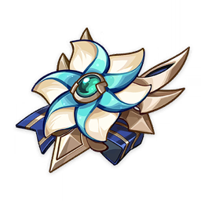

Genshin Impact · Versión 7.2
Análisis del Rol y Escalado
Varka es un personaje de elemento Anemo originario de Mondstadt que utiliza Mandoble y se posiciona en el tier T0.5 (S) Main DPS dentro del rol de Main DPS Anemo / Multi-Elemental Hexerei (Mandoble Rápido). Su rendimiento en combate gira en torno a este eje principal: Daño elemental convertido y Habilidad E escalan con ATQ y Crítico.
Para maximizar su aporte en el equipo, la configuración prioritaria combina Cantar de Gesta del Lobo con el conjunto de artefactos A Day Carved from Rising Winds (4 piezas), respetando la jerarquía de estadísticas Prob. Crítica (70–80%) > Daño Crítico (200%+) > ATQ% (2,500–3,000+) > Recarga (100–130%). y subiendo sus habilidades en orden: Habilidad Elemental (E) >>> Definitiva (Q) / Ataques Normales (opcionales).
Mejores Armas
Opciones recomendadas ordenadas por rendimiento según el meta actual y compatibilidad con sus rotaciones:
-
 Cantar de Gesta del Lobo ★★★★★BiS Firma608 ATQ base, 33.1% Prob. Crítica; +10% Vel. Ataque, +30% Daño y +30% Daño Crítico con Hexerei.
Cantar de Gesta del Lobo ★★★★★BiS Firma608 ATQ base, 33.1% Prob. Crítica; +10% Vel. Ataque, +30% Daño y +30% Daño Crítico con Hexerei. -
 Mil Soles Abrasadores ★★★★★Alternativa 5★741 ATQ base, 11% Prob. Crítica; +28% Daño Crítico y +20% ATQ tras Skill.
Mil Soles Abrasadores ★★★★★Alternativa 5★741 ATQ base, 11% Prob. Crítica; +28% Daño Crítico y +20% ATQ tras Skill. -
 Lápida del Lobo ★★★★★Alternativa 5★49.6% ATQ% + 20% ATQ base y +40% ATQ al equipo bajo 30% HP.
Lápida del Lobo ★★★★★Alternativa 5★49.6% ATQ% + 20% ATQ base y +40% ATQ al equipo bajo 30% HP. -
 Médula de la Serpiente Marina ★★★★Mejor 4★ Pase27.6% Prob. Crítica y hasta +30% Daño total con acumulaciones.
Médula de la Serpiente Marina ★★★★Mejor 4★ Pase27.6% Prob. Crítica y hasta +30% Daño total con acumulaciones. -
 Sombra de la Marea ★★★★Mejor F2P Forja41.3% ATQ% y +24% ATQ al recibir curación.
Sombra de la Marea ★★★★Mejor F2P Forja41.3% ATQ% y +24% ATQ al recibir curación.
Mejores Sets de Artefactos
Combinaciones de 4 piezas o mezclas de 2 piezas para maximizar su contribución:
-

A Day Carved from Rising Winds (4 piezas) BiS Hexerei+18% ATQ (2p); +25% ATQ y +20% Prob. Crítica adicional si completó Deberes de Bruja (Hexerei).
-
 Gladiator's Finale (2 piezas) + Shimenawa's Reminiscence (2 piezas) Alternativa 2p+2p
Gladiator's Finale (2 piezas) + Shimenawa's Reminiscence (2 piezas) Alternativa 2p+2p+36% ATQ total mientras completas el set de Vientos Alzantes.
Estadísticas Principales y Secundarias
Atributos prioritarios en artefactos para un balance óptimo de daño o soporte:
| Pieza | Estadística Principal |
|---|---|
| Reloj (Arenas) | ATQ% |
| Cáliz | ATQ% / Bono del Elemento Convertido |
| Corona | Daño Crítico / Prob. Crítica |
Prioridad de Subestadísticas
- Prob. Crítica (70–80%) > Daño Crítico (200%+) > ATQ% (2,500–3,000+) > Recarga (100–130%).
Prioridad de Talentos
Habilidad Elemental (E) >>> Definitiva (Q) / Ataques Normales (opcionales)
Objetivos de Estadísticas (Nivel 90)
Valores de referencia verificados para evaluar el equipamiento de Varka en nivel 90 con artefactos de 5 estrellas:
| Atributo | Meta Recomendada |
|---|---|
| Vida | 18,000 |
| Ataque | 2,500 – 3,000+ ATQ |
| Defensa | 800 |
| Maestría Elemental | 0 – 100 |
| Recarga de Energía | 100% – 130% ER |
| Balance Crítico | 70% – 80% CR / 200%+ CD |
Talentos de Combate y Materiales (Nivel 1 al 10)
Habilidades principales de Varka y desglose exacto de libros, materiales y Mora para mejorar sus talentos:


Composiciones de Equipo Recomendadas
Alineaciones con mayor sinergia elemental y amplificación de daño en el Abismo y Teatro Fantasía:
Hexerei Doble Pyro / Anemo
Varka • Nicole • Durin • Prune
Cumple todos los requisitos Hexerei para maximizar el daño de Varka.
Materiales de Ascensión (Nivel 1 al 90)
Recursos totales requeridos para desbloquear las 6 fases de ascensión de Varka. Coste total de Mora en ascensiones: 420.000 Mora.


Sinergias y Guías Relacionadas
Explora las fichas de armas, artefactos y materiales de los principales compañeros de equipo para Varka: